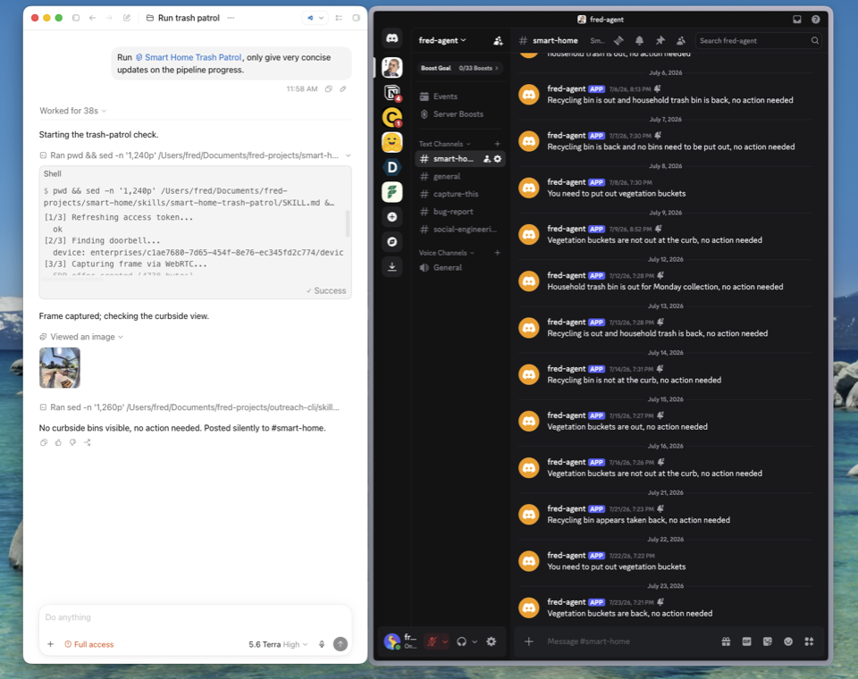

Loose pencil
Try it: select any evidence window to open its full note. Select it again to close.
← scrollFull evidence canvas stays intactscroll →

FrameHand-drawn contour
LabelMargin note
Full noteOpen paper aside
TemperamentHuman / editorial